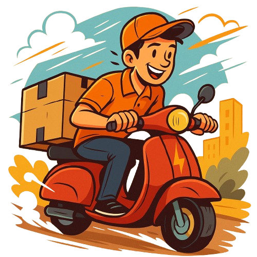

Jet Log
Jet Log
Precisa entregar rápido? Deixa com a gente!
Seja um documento urgente ou uma encomenda importante, a Jet Log entrega com rapidez, segurança e total compromisso.

Coletas programadas, rastreamento em tempo real e zero complicação.
Otimizamos sua logística com tecnologia e pontualidade. Nossa missão é simplificar sua rotina e conectar os pontos da sua operação com eficiência.
Agilidade é nossa prioridade, mas sem abrir mão da precisão. A Jet Log oferece soluções personalizadas para todas as suas demandas logísticas.
Veja o que podemos fazer por você:
- 📦 Entregas urgentes com motoboy
- 🚚 Fretes leves e médios para sua empresa
- 📅 Coletas programadas sob demanda
- 📍 Rastreamento em tempo real via celular
Quer garantir que sua entrega chegue na hora certa, sem stress? É só chamar a Jet Log.